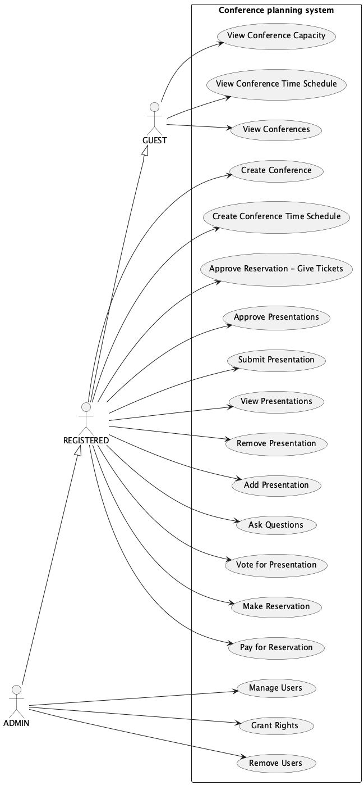

Obr. č. 2 - Diagram relačních závislostí (ER)

| Login | Heslo | Role |
|---|---|---|
| admin@example.cz | 123456789 | ADMIN |
| jan.novak@example.cz | 123456789 | REGISTERED |
| guest@example.cz | GUEST |
Obr. č. 1 - Diagram případů užití (UC)
Viz old.html a zadani, hlavne se zamerit na UC. youtube.com
TODOProjekt byl při rozdělování práce dekomponován na BE který je implementován ve složce app/ a na FE, ten je implementován odděleně ve složce iis-frontend. Tyto části se po specifikaci API na pravidelných týdeních schůzkách vyvýjely samostatně.
Pro implementaci BE byla použita databáze Postgresql a Python framework Fast-Api. Tyto moduly byly už při vývoji zabaleny do docker kontejnerů takže bylo jednoduše dosaženo stejného vývojového prostředí bez nutnosti instalace databáze. Model databáze je implementován v app/api/models.py a byl migrován nástrojem Alembic. Komnikaci mezi Python aplikací a databázovým systémem zařizovalo ORM SQLAlchemy app/api/base.py. Používané endpointy a schémata jsou implementovány v app/api/v1/ a crud operace v app/api/crud/. Kód obstarávající jiné služby je pak k nalezení v app/services/.
Samostatně implementovaný byl FE v Javascriptu s použitím frameworku Vue.js. Tento framework má velmi jednoduchou strukturu projektu, soubory iis-frontend/index.html, iis-frontend/src/App.vue, iis-frontend/src/main.js obsahují kostru. Komponenty které ji rozšiřují jsou implementované v iis-frontend/src/components/.
TODOObr. č. 2 - Diagram relačních závislostí (ER)
mv .env.example .env
vim .envpoetry shellmake buildcd iis-frontendnpm installnpm run buildŽádné.